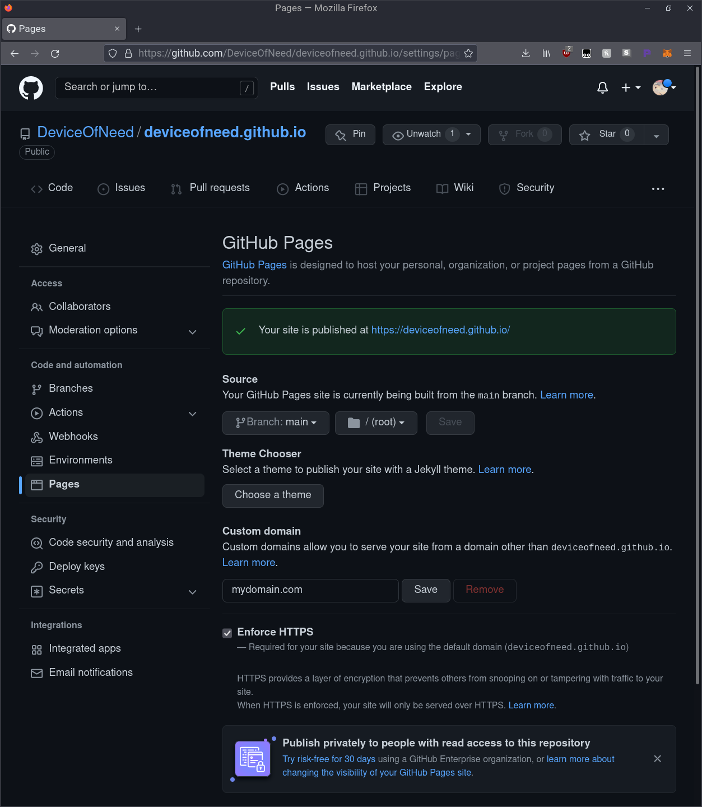

If you've found this article useful consider donating.
In this article I'll teach you how to create your very own website and host it through GitHub completely for free. Let's get started!
GitHub Setup
Firstly, you'll need to create a GitHub account if you don't have one already.
Once that is complete you'll want to create a new public repository with the following name (case sensitivity doesn't matter):
<your_github_username>.github.io
Now that you've created the repository you'll want to clone it to your local machine with the following command:
git clone https://github.com/<username>/<username>.github.io.git
If you don't have git installed you can follow
the instructions
here
to install it.
Now we can move on to actually creating the website.
Website Creation
You can write your own HTML and CSS to create your website however, for the purposes of this tutorial I'll be using a template from HTML5Up.
HTML5Up is a place where you can download and use premade HTML5 website templates for your own purposes completely for free.
After choosing and downloading your template, I'll be using the Aerial theme, you'll want to unzip the contents of the file to the GitHub directory you just cloned onto your machine.
Now your repository should look something like the following:
<username>.github.io/
├── assets/
├── index.html
├── LICENSE.txt
└── README.txtYou can go ahead and customize the HTML and CSS files to your liking but for this tutorial I'll just leave them as is.
Uploading Your Files to Your Repository
You're almost done! Now you need to push your changes up to your GitHub repository.
To push your changes to your repository you'll want to use either the command line or GitHub Desktop which is a GUI interface for working with GitHub repositories.
For the sake of simplicity I'll use GitHub Desktop to push the changes to my repository.
Upon launching GitHub Desktop you'll want to sign in and towards the top left of the application under the "File" option, you'll want to click on "Add local repository" and choose the repository you just cloned to your machine not too long ago.
Next you'll want to commit your changes to your main branch by clicking the blue button towards the bottom left side.
Great! Finally, you'll want to publish your branch by clicking on the "Publish branch" button towards the top left side of the application so your changes appear on GitHub.
Checking Your Website
Now you should be done! Congrats!
GitHub should be smart enough to publish your website automatically.
To make sure our website is live, go to the repository on GitHub and under the "Settings" tab, go to the "Pages" section.
If you don't see a green alert box saying your website is published (i.e. it's still a blue alert box) you just have to wait.
After a couple of minutes, GitHub should publish your website automatically at the following address:
https://<username>.github.io
If for some reason GitHub didn't detect your page automatically,
you'll simply want to update the branch GitHub pages is pointing
to. You have to make sure it points to the main branch
and the root folder.
Congratulations, you have now published your very first website!
Optional: Custom Domain Name
As an optional step, I'll be showing you how to add a custom domain to your website.
First you'll want to buy your domain. My go to place for buying domains is NameCheap but you can use any domain provider.
Once you've bought your domain, you'll want to configure
your domain provider's DNS settings to point to the GitHub
servers by adding the following four IP addresses as
A Record's:
185.199.108.153185.199.109.153185.199.110.153185.199.111.153
Next you'll want to create a CNAME and make sure it
points to your GitHub website like so:
Now head over to the local GitHub repository you cloned and add a
file called
CNAME.
Make sure it doesn't have a file extension and it's just
the name CNAME.
Now inside of CNAME add the name of the domain you just
purchased.
mydomain.comThen you want to go to GitHub Desktop and commit and publish your changes just like we did when we initially published our website.
You're almost done!
Finally you'll want to head over to your repository on GitHub
and under the Settings tab in the Pages section, make sure that the
custom domain listed is the one you wrote in the
CNAME file.

Congratulations! Now you have a website with a custom domain!
If you're still unsure or are stuck in adding a custom domain to your website you can go here for a more detailed explanation.